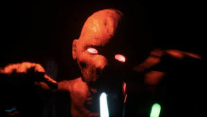
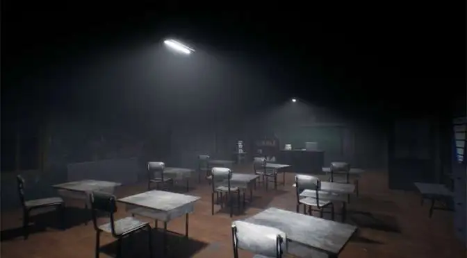

Overview
Screenshots


Responsibilities
- Ported the game to PlayStation platforms.
- Improved runtime performance and memory usage.
- Implemented gamepad controller support.
- Integrated platform trophy and achievement systems.
- Resolved gameplay bugs and platform-related issues.